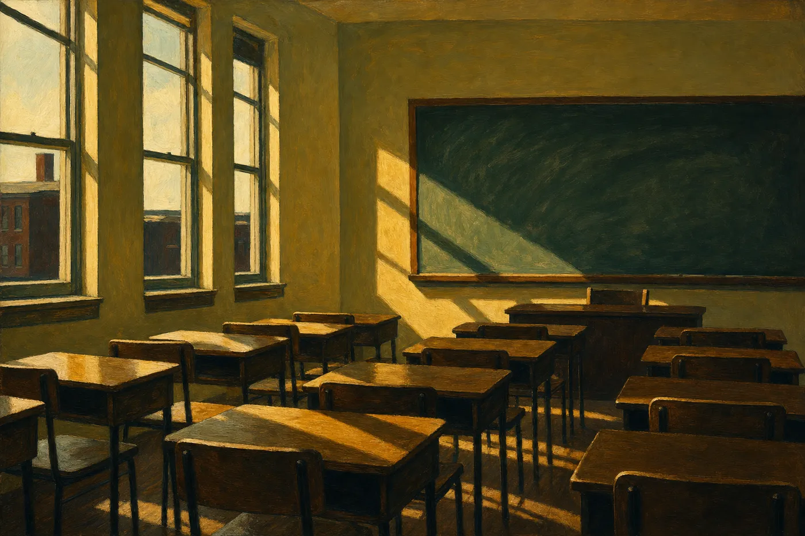

An Essay · On Craft
Teaching at Fifty-Six
On multitudes, communion, and the ordinary miracles of the classroom

Inspired by the words of Thoreau, Whitman, Emerson, Dickinson, and other patron saints of American literature, I tell my students, in whatever ways I can, they contain multitudes1, that nothing is at last sacred but the integrity of their own minds2, and the real business of life is to live in the present, find eternity in a moment3. We dwell in possibilities4, I say, and possibilities are endless. As a teacher of American literature, I want my students to use the literature as a way to make connections and find meaning.
Explore the circumference of your life5. Write about your experience. Celebrate yourself!6 I urge. My students answer, This ain’t math, Mr., or say under their breaths, Mr. Mulhern be on crack, He be trippin’, or That’s so gay. I teach poor inner-city kids, children of immigrants, immigrants themselves, kids who are struggling with many issues that I never dealt with in my Boston Irish Catholic upbringing, but sharing many of my issues as well: insecurity, perplexity, longing, nanosecond cycles of optimism and pessimism, but always, hope eternal7. To live is so startling for them, it leaves little time for anything else. In particular: their homework, their reading, their essays, and their attention in class, which is otherwise engaged by cell phones, ipods, or the bootylicious body in the next desk.
I begin my American Literature course by asking students to answer the questions, Who am I? Why am I like I am? What do I believe is true? They have to write an essay and read it to their peers. Most of them cringe at the thought of writing an essay, especially one that needs to be read aloud. My hope is that they start to see beyond the surface of themselves, their adolescent identities, and begin to know a sacred self deep inside, what Emerson calls the infinitude of the private man8. Literature, as I see it, is the ladder hanging close to the side of the schooner9, this assignment is the first rung, and I want my students to get wet. Telling students that they are schooners and that my sincere hope is that they get wet leads to all sorts of exchanges. Fuck you, for example. Mr., I ain’t getting wet for nobody, or perhaps the definitive, That’s nasty. My methodology is more precise. I give them a handout with specific, concrete directives, and have them read it first to themselves. Then I or a student reads it aloud, then I paraphrase each point several times, then I am repeatedly interrupted by Sasha, Makeba, Latitha, Tim, or Mark, who asks me if he/she can to go to the restroom, then I forget what I was in the middle of explaining, then I begin all over again, then somebody in the back says, What the fuck is he saying?, This sucks, I feel sick, or It’s too hot in here.
I can appreciate my students’ sensibilities, however. They are teenagers, and in the short span of their lives, how could they possibly be certain of who they are? I think back to when I was their age. I was certain of so much and so little at the same time; this is the paradox of youth. I remember sitting around Melinda Baker’s table—my friends and I full of ideas about religion, politics, and sex, beginning to feel like we had some control over our universe. I don’t know what my students talk about when they hang out with friends; I’m not there. But I know they wrestle with the same angst I felt when young. I see glimpses of it in their papers, and I love them for it.
My students are searching. All of us run fast, stretch our arms farther, until one fine morning we are older, at the halfway part19, looking back10. I think of Melanie from yesteryear who wanted to be an actress, how serious she was in the school plays, her erect posture and fair, fair skin; Andrea, the artist who designed all her own clothes, the beret she wore, the way she sauntered down the hall, hips swaying; John, long dirty red hair, high as a kite, reeking of marijuana, lanky, too tall for the small desk, sleeping at the back of the class; Michael, grinning and laughing with wide-eyed David beside him, both feigning innocence when I tell them to be quiet, then laughing some more; Rhonda from night school, her four children, cervical cancer, passing her GED exam after the third time, the way she cried. All of them are in their thirties now. I’d like to see them again, talk for a moment. It would be awkward to dwell longer than that. Teaching has joy, but there is sadness, too. When my students graduate, I experience the sensation of being left behind. Students come and go.14 The door closes and you are left in the room, remembering mostly their eyes, knowing them all, how they would fix you in some formulated phrase15, mold you by their vision. What did they see when they looked at me? Would they say school was worth it after all?
Sometimes, as a writing exercise, I tell my students to describe the rooms and furniture within their homes. Any structure and/or furnishing will do, I say to the recalcitrant ones. (Point of pedagogy—always give your students a choice.) I use this technique as an exercise in characterization and setting, but also as a way for students to better understand their past and present.
Nadine, a future fashion designer who doodles outfits, creates a short list: “coffee table, dressers, armchair (pink), one desk.” Jessica, with the meticulously organized notebook, relates how her “dog took care of a one-seater real good” and describes the sofa as the “main sitting piece where we chill and relax playing PS2, XBOX, and watching DVD’s on our big screen.” Alex, a thin dreamy-eyed young man in the corner, explains that his “dad sits on the rocking chair when we have guests” and smiling Shane, who asks each week about his grade, catalogs the “crappy, uncomfortable S———— High School seats; falling asleep in a beanbag chair; tripping over an ottoman; bar stools; break dancing on a rug,” and an enigmatic “mattress outside Circuit City at 2 a.m.”
As a teacher, you hope to evoke insights or epiphanies20, transcendental revelations that pour effortlessly onto your students’ notebooks. But this happens infrequently. The results are usually more prosaic. To expect gems of eternal wisdom is presumptive and naive. Fifteen, sixteen, seventeen years on this planet. What enlightenments can be gained in that short span of time? At fifty-six, I still grapple. Judy, a petite Jamaican girl who rarely speaks in class and wears a vacant expression most of the time, writes, “My mother has covered my brown couch with some red cloth to hide some of its ugliness. Plus my eighty-four-year-old grandma has taken permanent residence on it, never getting up from it except to go to the bathroom and eat. Now I call my brown couch ‘the forbidden couch’ because it’s like I can’t go near it. Even so, I have all these memories from it that I keep close to my heart.” There are themes here—pertinacity, aging, boundaries, ugliness we hide, positions we claim, memories we cling to.
If we are fortunate, we become freer as the years progress, and the emotional scars, from our more mature vantage points, appear as they really are—minor scrapes and cuts, dissipating rings, a rock cast into water. In the grand scheme, our personal experiences are the diminutions of a song, and this, to me, is sweet music.
But still we feel the pain. Life hurts. I am moved to tears when I read my students’ essays or when they share their stories in class: alcoholism, molestation, AIDS, violence, drug addiction, poverty, cancer, death, depression, loneliness, the loss of a parent or sibling—it’s all there, the opera of life. At times I want to be a father to all of them. I imagine that I’m rich and can pay for their college educations or buy the things they need.
A few years back, after Thanksgiving break, one of my students told me she was withdrawing from school. An older female relative hovered in the doorway while Charlene told me her mother and siblings were killed in a car crash on Thanksgiving eve. They had been traveling down Route 95 from Georgia to bring her home for the break. I said I was sorry and hugged her. What will you do now? I asked. She said she was moving to Georgia to live with cousins. In a moment she walked out of my classroom and life forever. The image of Charlene’s innocent, shocked expression returns to me again and I wonder what’s become of her. What is her world like now?
But the universe is also joyful and magical. We are simply too distracted to see the goodness, to enjoy the game, to decipher the messages, or to crack a smile. We hesitate. The letters are laid out for us like those on the Ouija board, over which I slyly pushed the heart-shaped planchette to the delight and fright of Mom and Cheryl (my childhood babysitter) on a hot July evening, the crickets sounding in the humid darkness outside the window. I spelled out the cliché story of an old lady, a former occupant of our house, who cooked her baby in the oven. I see the trinity of our heads over that board as we tried to discern and rift our way into the secret of things—What wisdom can we find here? A peal of laughter, a gasp, a scream, our excited faces staring at the stove. We laughed more, and things never felt so good. These are moments that radiate.
Carl Jung, a favorite of mine when I struggled with spiritual issues, discusses synchronicity, or the concept of meaningful coincidences, those shining moments when similar events cluster together and give one the sense that something extraordinary is occurring. There is a significance that cannot be explained by Western conceptions of cause and effect.
Like the moment Kayla announces in class during a discussion of Langton Hughes’s “Salvation” on the very same day that I write about my own disbelief in the Jonah story: “I have a question about the Bible. Are we supposed to believe that Jonah was swallowed by a whale and lived inside that thing for three days? Cause I think that’s crazy! I don’t believe that junk is true, Mr. Mulhern? Is it true?” And she looks at me with an adamant cause-I-just-really-gotta-know expression on her face, as though I will end her confusion right then and there.
I answer, as teachers are supposed to respond, respectful of the students, many of whom come from Biblical literalist religious traditions, that people read the Bible in different ways: some believe that it is the literal word of God, and others believe that the stories are meant to be understood symbolically. In America, I add, we believe in tolerance, and respect the diversity of religious beliefs. I don’t say, what I really think—that a literalist interpretation of the Bible is ignorant, dangerous, and offensive, and that I get angry at all the hate, misery, and evil that Christianity has caused in the long history of humanity.
As if sensing my dour and too-serious thoughts, Deshae, who is seated at the back of the room, bursts into laughter at something she is remembering. She jumps up and down in her seat, and exclaims, “Jesus came into my church this weekend.”
She runs to the front of the room, sits down, and begins her story, shaking her hand in front of her face, excited in her recollection, laughing, smiling ear to ear, “There’s this homeless guy. He thinks he’s Jesus.”
There is an explosion of laughter. Ebony, Veanna, and others say, “I know him!” They exchange stories of this man, discussing how he’s made the rounds in their churches.
Deshae continues, “He just walked in, said he was Jesus, and started rollin’ on the floor. We were all singin’ and the pastor, he just ignored him. I wanted to laugh, but I knew my mother would kill me.” I, like Deshae’s classmates, find the story amusing, and prod her. I want the details, trying to picture the reactions of the congregation more completely.
No one did anything? They just ignored him? I ask.
“Yeah.” She laughs. “We didn’t want to disrespect him. We just carried on!”
The other students share their anecdotes, and then I bring the class back to order, to our discussion of Hughes’s “Salvation.” We draw comparisons between our individual experiences and those of Langston Hughes, who recounts his childhood attendance at a church revival and the “special meeting for children ‘to bring the young lambs to the fold’” at the end of the service. In a bittersweet essay, Langston explains his anxiety and frustration as he “kept waiting to see Jesus,” how he believed that Jesus would literally come into the church and walk down the aisle. That night he cried over his deception, when after waiting an interminable amount of time, his “aunt came and knelt at my knees and cried, while prayers and songs swirled all around me in the little church.” Finally, he approached the altar, pretending to “see” Jesus come, and joined the fold of “little lambs” (his tired peers) who had already been “saved.”
It occurs to me that teaching is my salvation. There are wonderful moments, when things move so fluidly, and the pitch of our discussion seems just right—students are smiling, engaged, sharing feelings, excited. A palpable energy (the Holy Spirit?) moves through all of us—a realness, an in-the-momentness that charges the air and electrifies our conversations. Connections are made. Questions are answered. We learn who we are. If we are fortunate, we intuit an answer to the question Why? Sometimes we discover what is really true.
I believe this is true—People like to imagine that rare and delectable places11 lurk in some remote part of the universe or some distant epoch from the past, but right now, in my classroom, surrounded by students, I dwell in that delectable place, a most memorable season of any day. I feel intensely awake, most alive—renewed. I think, This is communion, and teaching will be the pond that I bathe in each morning12, every new day.
Notes on the Allusions
- “…they contain multitudes…”Whitman, Song of Myself, §51“I am large, I contain multitudes.”
- “…nothing is at last sacred but the integrity of their own minds…”Emerson, Self-Reliance“Nothing is at last sacred but the integrity of your own mind.”
- “…live in the present, find eternity in a moment…”Thoreau, Journal, 24 April 1859“You must live in the present, launch yourself on every wave, find your eternity in each moment.”
- “We dwell in possibilities…”Dickinson, Fr466 / J657“I dwell in Possibility – / A fairer House than Prose –”
- “Explore the circumference of your life.”Dickinson, letter to T. W. Higginson, 1862“Perhaps you smile at me. I could not stop for that – My Business is Circumference.”
- “Celebrate yourself!”Whitman, Song of Myself, opening line“I celebrate myself, and sing myself.”
- “…hope eternal.”Alexander Pope, An Essay on Man, Epistle I — not one of the four named patron saints“Hope springs eternal in the human breast.”
- “…what Emerson calls the infinitude of the private man.”Emerson’s own stated life doctrine“I have only one doctrine — the infinitude of the private man.”
- “…the ladder hanging close to the side of the schooner…”Adrienne Rich, “Diving into the Wreck,” 1973 — not one of the four named patron saints“There is a ladder. / The ladder is always there / hanging innocently / close to the side of the schooner.”
- “All of us run fast, stretch our arms farther, until one fine morning we are older…”F. Scott Fitzgerald, The Great Gatsby, closing page — not one of the four named patron saints“Tomorrow we will run faster, stretch out our arms farther… And one fine morning—”
- “…rare and delectable places…” / “…that delectable place…”Evokes John Bunyan, The Pilgrim’s Progress — the Delectable Mountains, a resting and renewing place on the pilgrim’s journey; not one of the four named patron saints“They went then till they came to the Delectable Mountains…”
- “…the pond that I bathe in each morning…”Thoreau, Walden, “Where I Lived, and What I Lived For”“I got up early and bathed in the pond; that was a religious exercise, and one of the best things which I did.”
- “…the service we give to others is the rent we pay for the privilege of living on this earth.”Shirley Chisholm, widely quoted formulation“Service is the rent that you pay for room on this earth.”
- “Students come and go.”T. S. Eliot, “The Love Song of J. Alfred Prufrock” — not one of the four named patron saints“In the room the women come and go / Talking of Michelangelo.”
- “…remembering mostly their eyes, knowing them all, how they would fix you in some formulated phrase…”T. S. Eliot, “The Love Song of J. Alfred Prufrock” — not one of the four named patron saints“And I have known the eyes already, known them all — / The eyes that fix you in a formulated phrase.”
- On borrowing from his patron saintsMulhern, “A Working Philosophy” (author’s own statement of craft)“I borrow this, gladly and openly, from Whitman, Thoreau, Emerson, and Dickinson — patron saints, as I think of them, of American literature.”
- On Mulhern’s allusive method more broadlyAn essay on Molly Bonamici at authorjamesmulhern.com“…the novel’s overt literary debts make a layered pastiche rather than a puzzle with one answer.”
- On the governing conviction of CrossingsA scholarly analysis of Crossings at authorjamesmulhern.com, offered as critical description, not a statement by Mulhern himself“The collection’s governing conviction is that nothing is finally lost — that what is laid down is taken up, that the same griefs and joys return in other hands…”
- “…at the halfway part…”Evokes Dante, Inferno, Canto I — not one of the four named patron saints; a thematic echo, not a phrase-for-phrase quotation“Midway upon the journey of our life…” (Longfellow translation)
- “…insights or epiphanies…”Evokes James Joyce’s critical term, Stephen Hero — not one of the four named patron saints; a conceptual echo, not a quotation“A sudden spiritual manifestation, whether in the vulgarity of speech or of gesture or in a memorable phase of the mind itself.”
A Critical Reading
The Ladder and the Word
On “Teaching at Fifty-Six”
Where the Ladder Hangs
“Teaching at Fifty-Six” carries more weight than its modest length suggests. It is the earliest full statement of a theology that runs beneath everything Mulhern has written since — the Kirkus-starred novel Give Them Unquiet Dreams, the story collections, the poems gathered in Crossings, and the critical and craft statements later published under his own name. What he would eventually formalize as doctrine is already at work here, unguarded, worked out in real time in front of a room of teenagers.
The essay announces its method in its first sentence: it is inspired by Thoreau, Whitman, Emerson, and Dickinson, named outright as “patron saints” of American literature. The phrase is doing real work. A patron saint is not merely admired; a patron saint is invoked, prayed to, asked to intercede. What follows is not allusion in the ordinary literary sense — a nod, a footnote — but something closer to liturgy: Mulhern places the Transcendentalists’ own sentences, nearly word for word, inside his own mouth, then hands them to students who answer him with This ain’t math, Mr. The distance between Emerson’s register and the hallway’s is not a flaw in the essay. It is the essay’s argument, compressed into a single collision.
A Borrowed Grammar
Six of these borrowings can be checked, phrase against phrase, against their sources — see the notes above. Together they are not ornament. They are a deliberate grammar.
Whitman’s I am large, I contain multitudes (Song of Myself, §51) becomes a promise made to the students rather than a claim made about the self: they contain multitudes. Emerson’s command in “Self-Reliance” — nothing is at last sacred but the integrity of your own mind — crosses over almost unchanged, its pronoun turned outward from one reader to a room of them. Thoreau’s 1859 journal entry, you must live in the present, launch yourself on every wave, find your eternity in each moment, is compressed to a clause and handed to sixteen-year-olds as a working philosophy. And Dickinson supplies both of the essay’s guiding verbs: we dwell in possibilities answers her I dwell in Possibility – / A fairer House than Prose –, while explore the circumference of your life answers her declaration to Higginson, my business is circumference. Even Emerson’s own summary of his life’s doctrine — the infinitude of the private man — is imported by name, inside the essay itself.
This is not quotation for polish. It is the working method Mulhern would later state as belief: that alluding to a master’s exact words is at once an act of homage and an act of resurrection, because the words keep doing their work long after the writer who minted them is gone. Emerson’s sentence about the mind’s integrity did not stop being true in 1841. Here it is still alive, still doing its job, folded into a classroom exchange about crack and bootylicious bodies. That collision is the point: the sacred text survives its transplant into the profane one.
The Wider Communion
Nine further allusions in the essay come from none of the four named patron saints, and Mulhern leaves every one of them unlabeled — not as an oversight, but as a deliberate feature of his method. He has said so himself, in an essay on his own working philosophy: he borrows from his patron saints “gladly and openly”16 — and the same openness, extended past the four names he credits, is what makes the essay’s wider field of allusion a considered technique rather than an accident of a well-read mind. Nothing here is hidden. It is pitched, deliberately, to the reader who already carries the source in memory and will hear it the instant it sounds — pastiche as a form of trust, the writer assuming an educated ear and rewarding it.
“Celebrate yourself!” is Whitman again, but a different Whitman — not Song of Myself’s multitudes, invoked by name two sentences earlier, but its opening line, I celebrate myself, and sing myself, turned from declaration into command and handed to teenagers as instruction. “…but always, hope eternal” compresses Alexander Pope’s Hope springs eternal in the human breast (An Essay on Man, Epistle I) into three words — a phrase so thoroughly absorbed into ordinary speech that a casual reader will take it for idiom, while the reader who knows Pope will hear Epistle I ringing underneath it. “Literature, as I see it, is the ladder hanging close to the side of the schooner” lifts its rigging directly from Adrienne Rich’s “Diving into the Wreck” (1973): There is a ladder. / The ladder is always there / hanging innocently / close to the side of the schooner. Rich’s ladder leads a lone diver down into a sunken wreck to recover a buried, mythologized version of the self among the wreckage of old stories; her poem opens, “First having read the book of myths.” Mulhern rigs the same ladder to a different hull — his descent is not solitary, and the whole class has to climb down together, however loudly they protest — but the destination is the one Rich named: not a shipwreck, but a self, mythologized by adolescence, that has to be dived for. And “All of us run fast, stretch our arms farther, until one fine morning we are older, at the halfway part, looking back” all but transcribes the last page of The Great Gatsby: tomorrow we will run faster, stretch out our arms farther… And one fine morning— Fitzgerald’s sentence is about a future that keeps receding; Mulhern’s repurposes it for a past that keeps arriving, the sudden discovery of middle age glimpsed in former students who are “in their thirties now.”
A fifth and sixth allusion arrive together, from the same source, in the same paragraph — the portrait gallery of former students. “Students come and go” sets T. S. Eliot’s refrain from “The Love Song of J. Alfred Prufrock” softly ringing: In the room the women come and go / Talking of Michelangelo. Two sentences later, “remembering mostly their eyes, knowing them all, how they would fix you in some formulated phrase” lifts, almost verbatim, Prufrock’s own anxiety: And I have known the eyes already, known them all—/ The eyes that fix you in a formulated phrase. The doubling is not incidental. Eliot’s Prufrock is a man paralyzed by the fear of being reduced, summarized, and filed away by other people’s judgment; Mulhern borrows that exact vocabulary of being “fixed” and “formulated” and turns it toward the opposite conclusion — not dread of his students’ eyes, but a wish to know what verdict is written there, and a willingness to ask the question outright: What did they see when they looked at me? Where Prufrock cannot bring himself to ask his overwhelming question, Mulhern asks his directly, in the room, of the memory itself.
A seventh allusion sits quietly in the essay’s account of what teaching is supposed to produce: “insights or epiphanies, transcendental revelations.” “Epiphany” is not a generic synonym for insight here — it is James Joyce’s own critical term, coined in Stephen Hero to name “a sudden spiritual manifestation, whether in the vulgarity of speech or of gesture or in a memorable phase of the mind itself.” That is precisely the mechanism the essay stages again and again: the sacred arriving not in ceremony but in a curse word, a couch draped in red cloth, a homeless man rolling on a church floor. Mulhern’s own site elsewhere describes his “fidelity to the ordinary epiphany” as part of a Joycean inheritance; here is that fidelity at its point of origin.
An eighth allusion is fainter still, a matter of position rather than phrase: “the halfway part, looking back” sits one clause away from Fitzgerald’s boats, but it also sits, more distantly, in Dante’s shadow — “Midway upon the journey of our life,” the opening line of the Inferno, translated by Longfellow into the same word Mulhern reaches for at his own moment of retrospection. Given Mulhern’s demonstrated fluency with Dante elsewhere in his fiction, this is offered as a resonance worth noting rather than a certainty — the essay is not staging a descent into hell, but it is staging exactly the kind of backward-looking accounting a reader midway through a life is prone to make.
A ninth allusion is looser, an echo rather than a lift, but worth naming: the essay’s “rare and delectable places” and the “delectable place” of the classroom itself recall the Delectable Mountains of Bunyan’s Pilgrim’s Progress — the resting stage of the pilgrim’s road, reached only after hardship, where the traveler is refreshed before continuing. Whether Mulhern had Bunyan consciously in view or arrived at the phrase by way of his own pilgrimage vocabulary — salvation, communion, the Holy Spirit — the resonance is strong enough to be worth flagging, even if it should be held more lightly than the others.
Taken together, these nine allusions — eight of them close to certain, the ninth held more lightly — extend the essay’s opening claim rather than undercutting it. Mulhern says he is inspired by Thoreau, Whitman, Emerson, and Dickinson. He is — and in the same breath, by design, he is drawing just as freely on a twentieth-century feminist poet, an eighteenth-century English satirist, a Jazz Age novelist, a Modernist poet, a Modernist novelist of consciousness, a medieval Florentine, and a seventeenth-century Puritan allegorist. The four patron saints are named because they are the essay’s stated lineage; the rest are left to be recognized rather than announced, which is exactly how allusive pastiche has always worked for a writer confident of his reader. This is not a writer’s carelessness or a critic’s speculation — it is a signature technique, consistent enough across Mulhern’s body of work that a separate scholarly study of his novel Molly Bonamici identifies the same layering of inherited texts by name, describing it as “a layered pastiche rather than a puzzle with one answer.”17 The density of allusion in “Teaching at Fifty-Six” is that same method in its earliest form: deliberate, allusive, and pitched at the reader capable of following it all the way down.
The Classroom as Church
Mulhern has said that he considers the arts, religion, and even science different paths up the same mountain — that passion, authenticity, and kindness let “the wind of ‘holy’ spirit” enrich a life, whichever path a person happens to be climbing. “Teaching at Fifty-Six” does not simply state this belief. It stages it, in one unbroken sequence, using three vocabularies most essays keep in separate rooms.
First comes Jung — a scientist of the psyche — and his idea of synchronicity, the sense that meaningful coincidence carries a significance ordinary cause and effect cannot explain. What follows is a specimen of that idea, not a mere example of it. Mulhern tells us the convergence happens on a single, specific day: the same day he is privately writing about his own disbelief in the Jonah story, his class is assigned to Langston Hughes’s “Salvation” — an essay about a boy who fakes a religious conversion because the promised vision never comes — and it is precisely during that discussion that Kayla stands up and asks, unprompted, whether anyone really believes a man lived inside a whale for three days. Then Deshae, sensing the room’s sudden solemnity, breaks it open with her own true story of a homeless man who walked into her church, announced he was Jesus, and rolled on the floor while the congregation “just carried on.” Private doubt, a curriculum chosen weeks earlier, a student’s spontaneous question, and a classmate’s real-life account of a false salvation all land on the same twelve minutes of the same day. This is not an essay that happens to describe Jungian synchronicity; it is a deliberate rendering of it — Mulhern building his own classroom scene to duplicate, in miniature, the very principle he holds as belief: that meaningful patterns recur across domains that reason alone would keep separate. The convergence in the room is the same conviction that elsewhere lets him call the arts, religion, and science different paths up one mountain, and it is the same conviction, structurally, that lets a Transcendentalist sentence from 1841 speak truly inside a twenty-first-century classroom. Form and belief are not separate claims here; they are the same claim, made twice. Science, scripture, and literature are not competing for the same class period. They are converging on it, each lighting the same moment from a different angle, exactly as Mulhern’s own cosmology says they should — because he built the moment to prove it.
The essay names the result outright: a palpable energy (the Holy Spirit?) moves through all of us. The question mark is doing careful work — the hedge of a writer unwilling to overclaim doctrine, but also unwilling to let the word go. By the final page the hedge is gone: I think, This is communion.
In the Other Room
The essay’s quietest, most consequential move is its roll call of students no longer in the room: Melanie, Andrea, John, Michael, David, Rhonda — “all of them are in their thirties now” — and, most devastatingly, Charlene, who walked out of Mulhern’s classroom after her mother and siblings were killed on Route 95. The image of Charlene’s innocent, shocked expression returns to me again, he writes, and I wonder what’s become of her. He does not know. He writes her anyway.
This is the same gesture that closes Give Them Unquiet Dreams, where the dead are not gone, only “in the other room” — a belief that converts every elegy from a poem of loss into a poem of ongoing presence. Charlene has not died; she has simply gone through a doorway Mulhern cannot follow her through. But by naming her, by holding her face in a sentence years after she vanished from his roster, he does the one thing available to a writer standing on the wrong side of that door: he keeps her present. A scholarly analysis of Crossings would later name this exact habit of mind as the collection’s “governing conviction”: that nothing is finally lost, that what is laid down is taken up, that the same griefs return in other hands.18 “Teaching at Fifty-Six” is that conviction caught in rehearsal, years before any critic had named it: Charlene, Judy and her forbidden couch, Rhonda and her GED, all laid down on the page, and by that act, taken up again.
The Word Made Flesh
“In the beginning was the Word, and the Word was with God, and the Word was God.” John 1:1, King James Version
Mulhern spent decades teaching literature — which is to say, teaching other people’s words for a living — and it is hard to read this essay’s opening paragraph without hearing, underneath it, the logic of the Johannine prologue. In the beginning of the essay is the word: Thoreau’s, Whitman’s, Emerson’s, Dickinson’s. That word does not stay confined to its own century. By the time Mulhern has folded it into his own sentence and handed it to Kayla or Nadine or Judy, it has, in a real sense, become his. The masters’ language is not kept behind glass here, footnoted and untouchable. It is put back into circulation, spoken aloud, misquoted by teenagers, argued with — and in the process made flesh again, incarnated in a new mind, the way Mulhern hopes his students will come to know “a sacred self deep inside” through those very words.
This is the mechanism behind the belief he has since stated plainly: that alluding to the writers he admires is both an act of homage to their greatness and a demonstration that the canon is meant to be resurrected and transfigured, again and again, by the grace their words still carry. Grace, on this reading, is not a metaphor borrowed loosely from religion for literary effect. It is Mulhern’s working description of what happens when an old sentence is spoken with enough sincerity to move a new room of people — when the Word, already ancient, becomes flesh once more.
The Rent He Paid
“It is more blessed to give than to receive.” Acts 20:35, King James Version
The essay is threaded through with a private fantasy of wealth that has nothing to do with money: I imagine that I’m rich and can pay for their college educations or buy the things they need. Mulhern could not actually rescue his students from alcoholism, cancer, or the loss of a parent — the “opera of life” he lists in one relentless clause — but he could give them his attention, his patience through interruption after interruption, and, finally, his own sacred texts. By the essay’s last paragraph the arithmetic of that giving completes itself: it occurs to me that teaching is my salvation … teaching will be the pond that I bathe in each morning, every new day. He set out to give something to thirty teenagers and came away, each morning, replenished.
Mulhern has said as much directly, in language that carries forward Shirley Chisholm’s own famous formulation of the same idea — that the service we give to others is “the rent we pay for the privilege of living on this earth.”13 Acts 20:35 supplies the scriptural version of that same claim, the counterintuitive insistence that giving, not getting, carries the deeper blessing. “Teaching at Fifty-Six” does not stop to cite either source. It trusts the reader to recognize both, and simply performs the claim, morning after morning.
The essay’s very last image works the same way. Teaching will be the pond that I bathe in each morning, every new day is not an invented figure; it is Thoreau’s own daily rite, deliberately reinhabited. In Walden he writes, “I got up early and bathed in the pond; that was a religious exercise, and one of the best things which I did.” The essay opens by invoking Thoreau on living in the present, and closes by re-enacting, note for note, one of his actual mornings — a frame too exact to be accidental, and too well-made to be anything but intentional. What Thoreau performed once, alone, at Walden, Mulhern performs daily, in a room full of teenagers, resurrecting the ritual for them whether or not they recognize whose it originally was.
One Mountain, Many Paths
“I believe all of the arts, like religion and even the realm of science, are different paths to the same mountaintop. If we are passionate in our endeavors, authentic, and kind, the wind of ‘holy’ spirit will enrich our lives. We become better human beings and understand that the service we give to others is the rent we pay for the privilege of living on this earth.”13 James F. Mulhern — closing formulation after Shirley Chisholm
Read backward through this stated belief, “Teaching at Fifty-Six” stops looking like an essay that happens to touch on religion, science, and literature, and starts looking like a proof of concept. Jung’s synchronicity, Kayla’s Jonah, Deshae’s homeless Jesus, Hughes’s “Salvation,” and Dickinson’s circumference are not four subjects competing for the same class period. In Mulhern’s cosmology they were never separate to begin with — they are four vantage points on one mountain, and the essay’s real achievement is its refusal, at every turn, to rank one path above the others. Science does not disenchant the Ouija board; scripture does not outrank Whitman; a homeless man’s performance of Christ is treated with the same seriousness as Langston Hughes’s essay about the same longing. They are, simply, weather on the same climb.
Everything argued above — the borrowed grammar, the wider communion, the classroom as church, the rent paid in service — rests on one claim: that a conviction spoken once does not stay put in the year it was spoken. It moves. “Teaching at Fifty-Six” ends with Mulhern bathing in a pond each morning, a small rite repeated rather than performed once. The poem below, written years later, shows that rite still running, only transposed: the classroom has become his mother’s apartment, a room of teenagers has become a single walker beside a chair, and showing up each morning, without fail, is still the whole of the discipline. This is not a coincidence supplied for a tidy ending. It is the essay’s own argument about resurrection and recurrence, caught once more in the act of proving itself — the same hand, the same fidelity, a different room.
From the Poem “Moving Forward”
When she dies,
I’ll unlock her still apartment.
When I see her walker,
I’ll remember her resolve
to always move forward.
I’ll feel her fingers
softly trace my face,
and hear her say,
“I love you, sweetheart.”
Sources
- Walt Whitman, “Song of Myself,” §51, Leaves of Grass.
- Walt Whitman, “Song of Myself,” opening line, Leaves of Grass (1892 version) — Poetry Foundation.
- Ralph Waldo Emerson, “Self-Reliance,” Essays: First Series (1841) — full text.
- Henry David Thoreau, Journal entry, 24 April 1859 — The Walden Woods Project.
- Emily Dickinson, “I dwell in Possibility –” (Fr466/J657) — Poetry Foundation.
- Emily Dickinson, letter to T. W. Higginson, July 1862 — Emily Dickinson Archive.
- Ralph Waldo Emerson on “the infinitude of the private man” as his stated life doctrine — Harvard Magazine.
- Alexander Pope, An Essay on Man, Epistle I, line 95 — Project Gutenberg.
- Adrienne Rich, “Diving into the Wreck,” title poem of Diving into the Wreck: Poems 1971–1972 (Norton, 1973) — Academy of American Poets.
- F. Scott Fitzgerald, The Great Gatsby, closing page (1925) — discussed in Reason and Meaning.
- T. S. Eliot, “The Love Song of J. Alfred Prufrock” (1915) — Poetry Foundation.
- James Mulhern, “A Working Philosophy,” in the author’s own words — authorjamesmulhern.com.
- “Pastiche and Undertow,” an essay on Molly Bonamici — authorjamesmulhern.com.
- “Crossings — A Comprehensive Analysis and Evaluation,” an essay, not a statement by Mulhern himself — authorjamesmulhern.com.
- Dante Alighieri, Inferno, Canto I, l. 1, trans. Longfellow (1867) — background.
- James Joyce’s definition of “epiphany,” Stephen Hero — background; Mulhern’s own site describes his “fidelity to the ordinary epiphany” as part of his Joycean inheritance — authorjamesmulhern.com.
- John Bunyan, The Pilgrim’s Progress, “The Delectable Mountains” — background.
- Henry David Thoreau, Walden, “Where I Lived, and What I Lived For” — Project Gutenberg.
- John 1:1, King James Version — King James Bible Online.
- Acts 20:35, King James Version — King James Bible Online.
- Shirley Chisholm, widely quoted formulation — “Service is the rent that you pay for room on this earth” — AZ Quotes.
- The belief that the dead are not gone, only “in the other room,” originates in Mulhern’s novel Give Them Unquiet Dreams; discussed in a critical essay on the motif at authorjamesmulhern.com.
- James Mulhern, “Moving Forward,” Crossings — full text at authorjamesmulhern.com; an earlier version first appeared in The Galway Review (May 2022).
Continue Reading